1 cm001 - introduction
1.1 Intro to course; S/W install; acct sign-ups
1.1.1 Data Domination
“Software programming, algorithm development and other technological skills can give scientists an edge in their fields.” — Careers,31 August 2017
“A picture is worth a thousand words.”
1.1.2 Data Science Tool :
R
Rstudio : an integrated development enviroment(IDE) for R
Rmarkdown
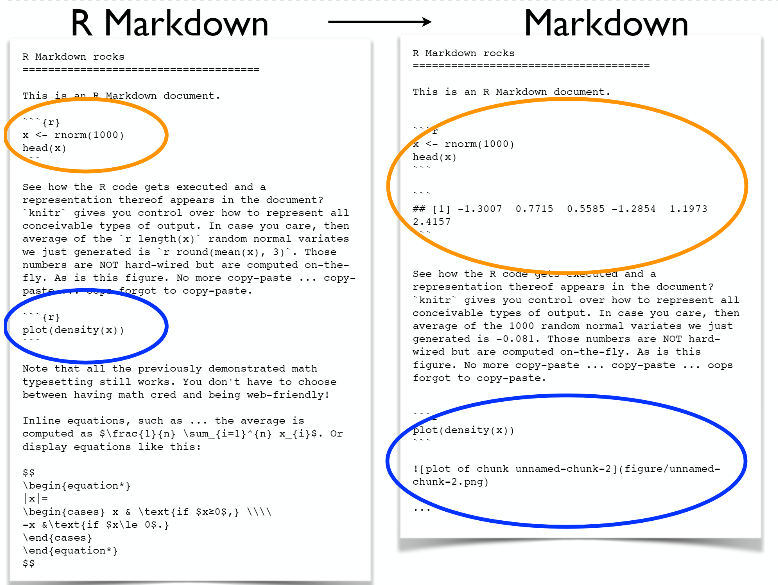
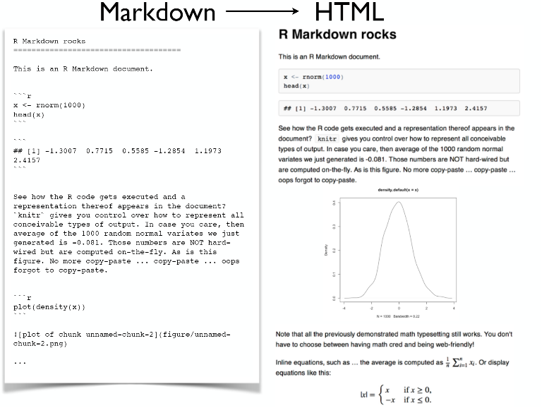
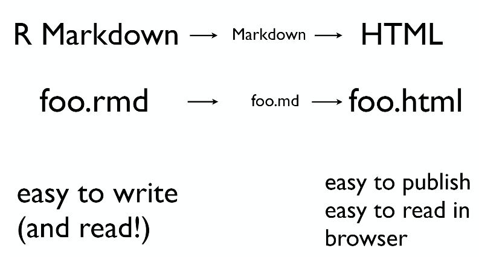
- git and github : Version control systems(VCS) and collaboration tools.
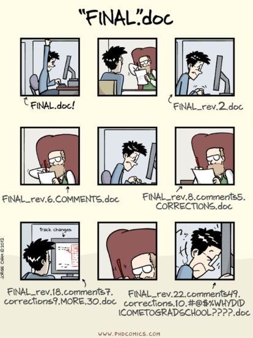
GNU Make
How to make end products more integrated and more reproducible?
How to keep everything up-to-date?
if the data changes, how do we remember to remake the figure 2B and 4?
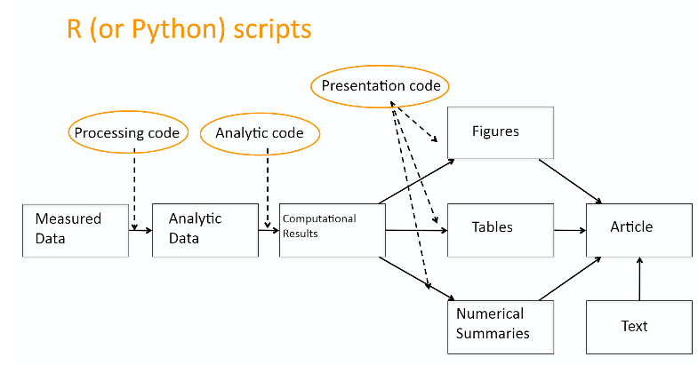
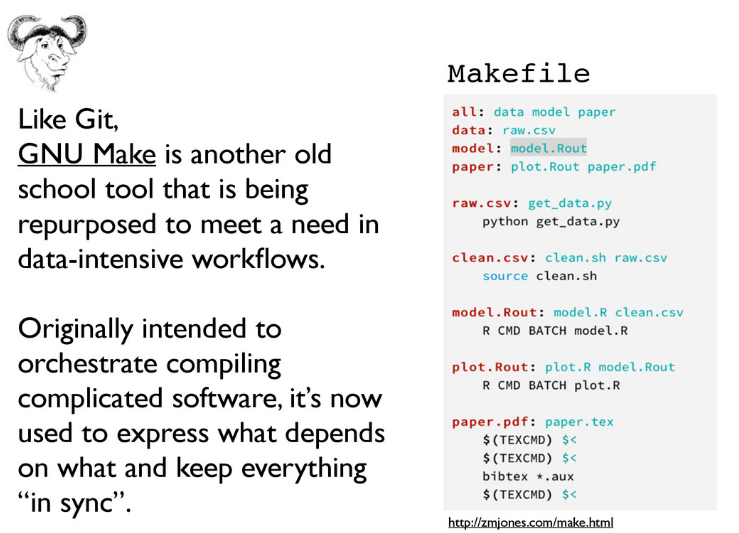
1.1.3 What is Data Science?
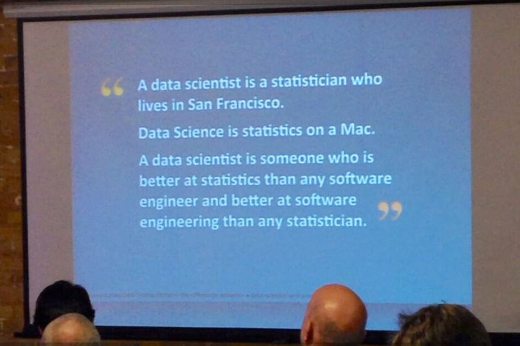
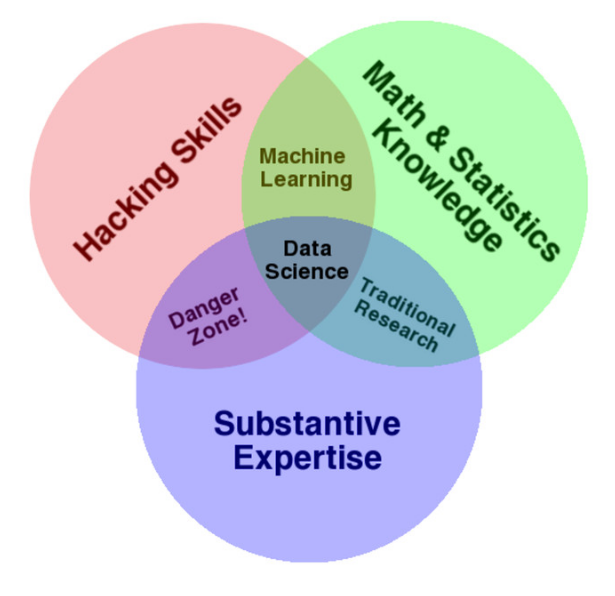
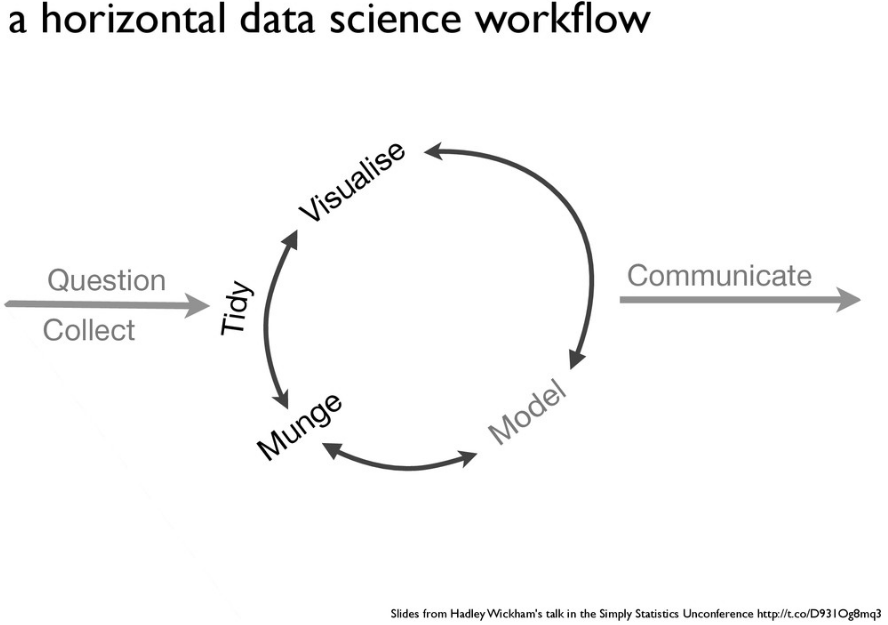
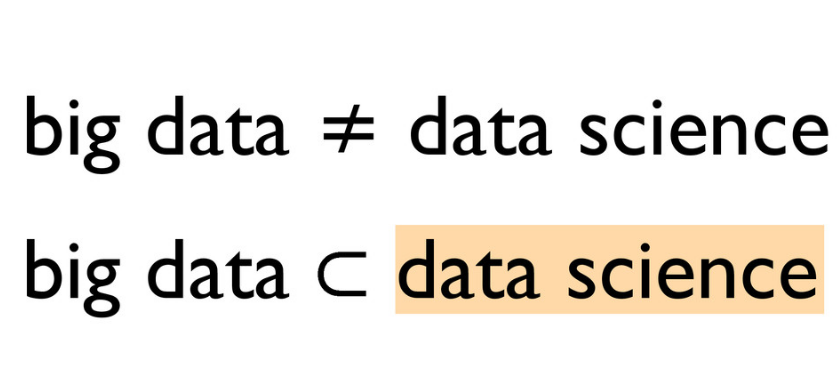
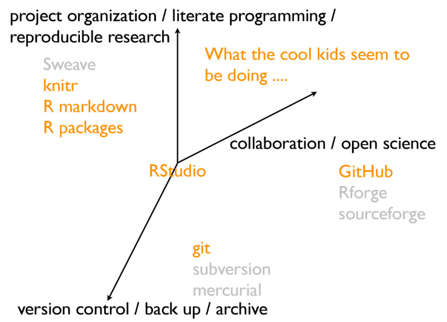
1.2 Deep Thoughts about data analytic work; intro to R and RStudio
1.2.1 To do before next class:
- swirl: “a software package for the R programming language that turns the R console into an interactive learning environment”
1.2.2 Basics of working with R at the command line and RStudio goodies
Launch RStudio/R and notice the default panes:
- Console (entire left)
- Environment/History (tabbed in upper right)
Files/Plots/Packages/Help (tabbed in lower right)
- Make an assignment.
x <- 3 * 4
x
#> [1] 12“assignments” form:
objectName <- valueKeyboard shortcut for assignment operator
<-is Alt + - (the minus sign).RStudio offers many handy keyboard shortcuts.
Alt+Shift+K brings up a keyboard shortcut reference card.
Object names
i_use_snake_case
other.people.use.periods
evenOthersUseCamelCaseMake another assignment
this_is_a_really_long_name <- 2.5To inspect this, try out RStudio’s completion facility: type the first few characters, press TAB, add characters until you disambiguate, then press return.
Make another assignment
jenny_rocks <- 2 ^ 3R has a mind-blowing collection of built-in functions that are accessed like so
functionName(arg1 = val1, arg2 = val2, and so on)seq()which makes regular sequences of numbers- Type
seand hit TAB.
- Type
seq(1,10)
#> [1] 1 2 3 4 5 6 7 8 9 10yo <- "hello world"y <- seq(1, 10)
y
#> [1] 1 2 3 4 5 6 7 8 9 10Surrounding the assignment with parentheses, which causes assignment and “print to screen” to happen.
(y <- seq(1, 10))
#> [1] 1 2 3 4 5 6 7 8 9 10Not all functions have (or require) arguments:
date()
#> [1] "Fri Jul 6 21:08:07 2018"- The workspace is where user-defined objects accumulate. You can also get a listing of these objects with commands:
objects()
#> [1] "jenny_rocks" "this_is_a_really_long_name"
#> [3] "x" "y"
#> [5] "yo"
ls()
#> [1] "jenny_rocks" "this_is_a_really_long_name"
#> [3] "x" "y"
#> [5] "yo"remove the object named y
rm(y)To remove everything:
rm(list = ls())or click the broom in RStudio’s Environment pane.
1.2.3 Workspace and working directory
1.2.3.1 Workspace, .RData
1.2.3.2 Working directory
You can explicitly check your working directory with:
getwd()Although I do not recommend it, in case you’re curious, you can set R’s working directory at the command line like so:
setwd("~/myCoolProject")Although I do not recommend it, you can also use RStudio’s Files pane to navigate to a directory and then set it as working directory from the menu: Session –> Set Working Directory –> To Files Pane Location. (You’ll see even more options there). Or within the Files pane, choose More and Set As Working Directory.
1.2.4 RStudio projects
Keeping all the files associated with a project organized together – input data, R scripts, analytical results, figures – is such a wise and common practice that RStudio has built-in support for this via its projects.
Let’s enter a few commands in the Console, as if we are just beginning a project:
a <- 2
b <- -3
sig_sq <- 0.5
x <- runif(40)
y <- a + b * x + rnorm(40, sd = sqrt(sig_sq))
(avg_x <- mean(x))
#> [1] 0.45
write(avg_x, "avg_x.txt")
plot(x, y)
abline(a, b, col = "purple")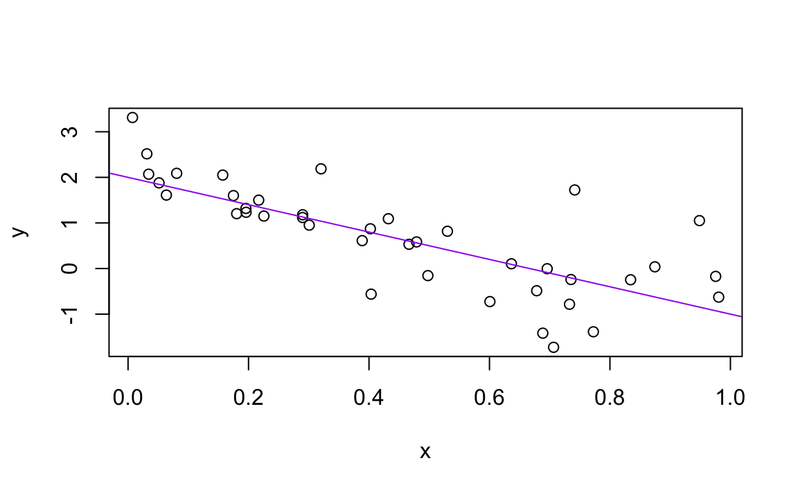
dev.print(pdf, "toy_line_plot.pdf")
#> quartz_off_screen
#> 2source(file.r)In your favorite OS-specific way, search your files for toy_line_plot.pdf and presumably you will find the PDF itself (no surprise) but also the script that created it (toy-line.r). This latter phenomenon is a huge win. One day you will want to remake a figure or just simply understand where it came from. If you rigorously save figures to file with R code and not ever ever ever the mouse or the clipboard, you will sing my praises one day. Trust me.
1.2.5 stuff
It is traditional to save R scripts with a .R or .r suffix.
Comments symbol : #
de(comment) : Ctrl+Shift+C
This workflow will serve you well in the future:
- Create an RStudio project for an analytical project
- Keep inputs there
- Keep scripts there; edit them, run them in bits or as a whole from there
- Keep outputs there (like the PDF written above)
Many long-time users never save the workspace, never save .RData files (I’m one of them), never save or consult the history.
Option to disable the loading of .RData and permanently suppress the prompt on exit to save the workspace (go to Tools->Options->General).